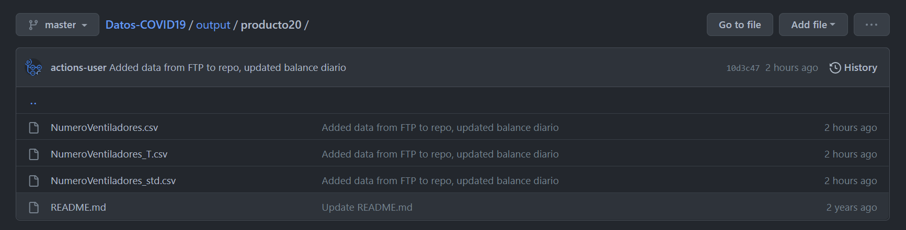
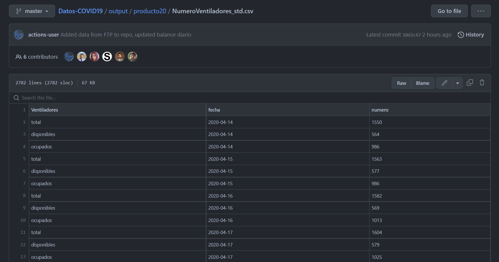
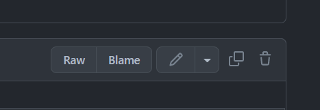
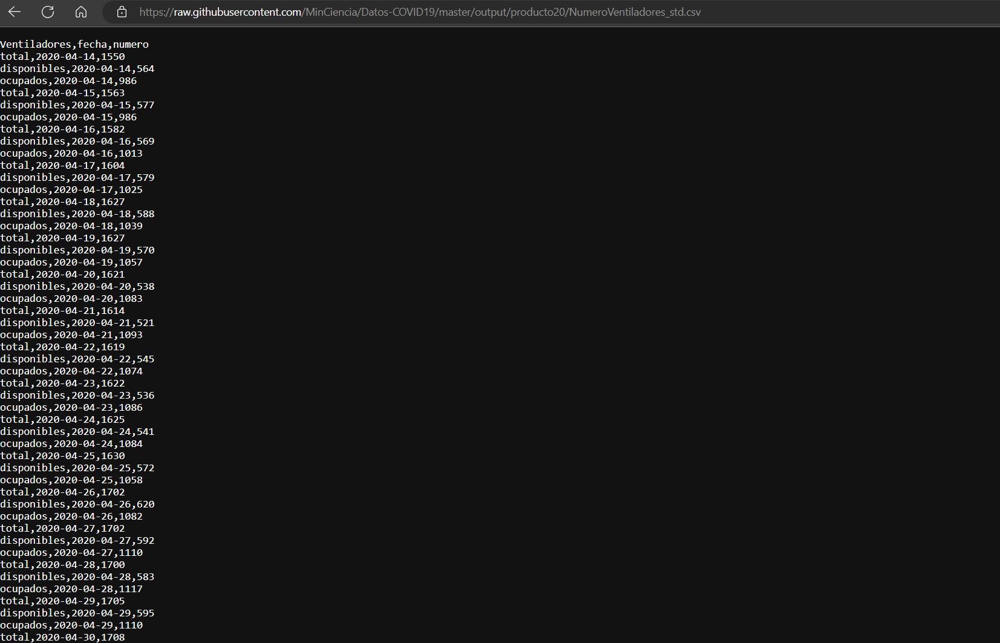

import pandas as pd
url = 'https://raw.githubusercontent.com/MinCiencia/Datos-COVID19/master/output/producto20/NumeroVentiladores_std.csv'
beds_py = pd.read_csv(url)Hola!!!
En esta ocasión veremos un tema que me preguntan mucho siempre. Habitualmente cuando hago clases o algún taller de programación, sale esta duda…
¿Cómo descargar los archivos desde GitHub?
Me refiero a descargar los archivos csv alojados en GitHub para poder usarlos.
Ok.
Revisemos paso a paso cómo hacerlo. Y para ello, usaré 2 lenguajes de programación que me gustan mucho: Python y R. Además, que si estás interesado/a en la ciencia de datos, los más seguro es que uses alguno de ellos.
Ah! Acá no voy a revisar cómo descargar todo el repositorio remoto desde GitHub (clonarlo), sino a solo un archivo que esté ahí disponible. Tampoco haré un análisis de los datos. Ya habrá momento para eso.
Pero haremos algo entretenido, que es medir cuánto demoran cada uno!! 😎
Accediendo a GitHub
Para este tutorial, usaré el repositorio del Ministerio de Ciencias y Tecnología de Chile, que contiene muchos datos de los casos COVID-19.
En particular, usaremos uno de los data products, que es sobre las camas críticas disponibles a nivel nacional. Para revisar los datos, debes entrar a esta dirección.
Para esta parte, no necesitas tener cuenta creada en GitHub.
Cuando entres a esa sección, te encontrarás con algo similar a ésto:

Además del README con los detalles de los datos acá disponibles, verás 3 archivos .csv (comma separate values), que son básicamente los dataset con los datos. Usaremos el que tiene el sufijo _std, pues tiene un formato más fácil de comprender para nuestros efectos.
Para poder ver esos datos, hacemos clic sobre el enlace NumeroVentiladores_std.csv.
Se te mostrará la siguiente información:

Sale una previsualización de los datos.
Me ha tocado ver a muchos que lo que hacen acá es copiar y pegar, sin más. Es decir, seleccionan con el ratón los datos y los copian en un Excel o algo así.
Por favor… No hagas eso!!!! 🤢
Justamente, este artículo es para ello y que no cometas ese error.
Vamos…
Fíjate que arriba a la derecha hay unos botones. Uno de ellos dice Raw. Dale clic.

Se mostrarán los datos de una forma extraña, como todos juntos. No te asustes!!! Es normal, pues es el formato de los archivos csv.

Lo relevante acá es la dirección web que sale en tu navegador. Esa dirección es la que usaremos para nuestro código y descargar los datos, pues desde las pantallas anteriores no podrás hacerlo de forma adecuada.
Ahora veamos cómo descargar esos datos a nuestro computador para poder usarlos en los análisis. Como te mencioné, pondré ejemplos tanto de Python como de R. Además, haré un breve benchmark para revisar cuánto se demoran los scripts en ejecutar las funciones.
Usando Python
Para descargar los datos, usaremos Pandas y su función read_csv() a la cual le debemos pasar la dirección web (url) donde se encuentran los datos que vimos anteriormente en formato raw.
Fíjate que la url se la pasamos como un dato de tipo string (cadena de texto), por lo cual la tenemos que envolver con comillas.
Revisemos el código:
print(beds_py.head()) Ventiladores fecha numero
0 total 2020-04-14 1550
1 disponibles 2020-04-14 564
2 ocupados 2020-04-14 986
3 total 2020-04-15 1563
4 disponibles 2020-04-15 577Y eso es todo!!
Ya creamos un objeto (dataframe) con los datos desde GitHub.
Usando R
Ahora vemos cómo descargar los datos con R. La sintaxis es muy similar.
Usaremos la librería reader y su función read_csv(), a la cual le pasamos la url de los datos en raw. Igual que antes, se coloca la dirección como un string (entre comillas)
library(readr)
url <- "https://raw.githubusercontent.com/MinCiencia/Datos-COVID19/master/output/producto20/NumeroVentiladores_std.csv"
beds_r <- read_csv(url) head(beds_r)# A tibble: 6 × 3
Ventiladores fecha numero
<chr> <date> <dbl>
1 total 2020-04-14 1550
2 disponibles 2020-04-14 564
3 ocupados 2020-04-14 986
4 total 2020-04-15 1563
5 disponibles 2020-04-15 577
6 ocupados 2020-04-15 986class(beds_r)[1] "spec_tbl_df" "tbl_df" "tbl" "data.frame" Listo!!! Ya tenemos los datos.
Al igual que antes, tenemos un objeto de tipo dataframe, aunque con unos pequeños detalles, pues la esta función nos devuelve un tibble. Si quieres indagar más sobre las diferencias entre un tibble y un dataframe clásico, puedes revisar este enlace. Pero para nuestros objetivos, da igual.
Como puedes ver, descargar archivos desde GitHub es bastante simple y no requiere gran esfuerzo ni complicaciones. Pero quizás te estás preguntando y para qué quiero hacer eso? Si finalmente podría tener los datos en el computador y bastaría.
La gracia de tener esta “conexión” con el repositorio remoto de GitHub es que en la medida que los datos sean modificados, cada vez que ejecute el código, voy a descargar la última versión del archivo. Esto es muy útil para temas de automatizaciones y esas cosas. Pero como te estarás imaginando, no lo veré ahora y ya habrá momento para revisar ese tema.
Desempeño
Vimos cómo descargar los datos usando Python y R usando las funciones que más comunmente se suelen usar para ello. Los datos que descargamos son pequeños y no representan gran trabajo. La cosa se podría poner más compleja si la cantidad de datos es mayor. Esto es importante a la hora de desplegar un script, por lo cual es interesante evaluar cuánto demora cada función en realizar esta tarea.
Como ya estamos usando estos datos, veamos cómo hacerlo en cada lenguaje.
Python
Forma 1: usando time
import time
tic = time.perf_counter()
url = 'https://raw.githubusercontent.com/MinCiencia/Datos-COVID19/master/output/producto20/NumeroVentiladores_std.csv'
beds_py_bench1 = pd.read_csv(url)
toc = time.perf_counter()
print("Segundos: ", toc - tic) # Resulstado en milisegundosSegundos: 0.07435119999900053Forma 2: usando ttictoc
from ttictoc import tic,toc
tic()
url = 'https://raw.githubusercontent.com/MinCiencia/Datos-COVID19/master/output/producto20/NumeroVentiladores_std.csv'
beds_py_bench2 = pd.read_csv(url)
elapsed = toc()
print("Segundos: ", elapsed)Segundos: 0.06629780000002938Los resultados pueden variar entre una ejecución y otra y se ven afectado por la calidad de la conexión a internet, pero vemos que entre ambos ejemplos no hay muchas diferencias en tiempo.
R
library(tictoc)
tic()
url <- "https://raw.githubusercontent.com/MinCiencia/Datos-COVID19/master/output/producto20/NumeroVentiladores_std.csv"
beds_r_bench <- read_csv(url)
toc()0.15 sec elapsedAl igual que lo mencionado antes, los resultados pueden variar entre una ejecución y otra del códico. Sin embargo, al parecer esta forma es más lenta que en Python. Bueno, el tidyverse a pesar de que me encanta, no es la cosa más rápida en general. Para ello, hay otras librerías con mejor desempeño como vroom (que es parte de tidyverse de igual forma) y data.table.
Usando vroom:
tic()
url <- "https://raw.githubusercontent.com/MinCiencia/Datos-COVID19/master/output/producto20/NumeroVentiladores_std.csv"
beds_r_bench1 <- vroom::vroom(url)
toc()0.16 sec elapsedUsando data.table:
library(data.table)
tic()
url <- "https://raw.githubusercontent.com/MinCiencia/Datos-COVID19/master/output/producto20/NumeroVentiladores_std.csv"
beds_r_bench2 <- data.table::fread(url)
toc()0.07 sec elapsedAmbos tiempos están cercanos, a veces gana data.table otras vroom, pero van cambiando constantemente en la medida que ejecutamos nuevas pruebas.
¿Podemos solucionar eso?
Hagamos algo loco… porque hasta ahora solo han sido unas cuantas ejecuciones de cada código y puede no ser muy representativo.
Qué tal si corremos el código 1000 veces?
Si, mil.
Para suerte de nosotros, no tenemos que estar apretando el botón todas esas veces, sino que podemos usar alguna librería de bencharking para eso.
library(microbenchmark)
bench_fread <- microbenchmark(
url <- "https://raw.githubusercontent.com/MinCiencia/Datos-COVID19/master/output/producto20/NumeroVentiladores_std.csv",
beds_fread_bench <- data.table::fread(url),
times = 1000
)
bench_freadUnit: nanoseconds
expr
url <- "https://raw.githubusercontent.com/MinCiencia/Datos-COVID19/master/output/producto20/NumeroVentiladores_std.csv"
beds_fread_bench <- data.table::fread(url)
min lq mean median uq max neval cld
0 1 1361.59 1300 2001 19901 1000 a
11468101 15399052 21544789.11 19157751 22793351 280058401 1000 bbench_vroom <- microbenchmark(
url <- "https://raw.githubusercontent.com/MinCiencia/Datos-COVID19/master/output/producto20/NumeroVentiladores_std.csv",
beds_vroom_bench <- vroom::vroom(url),
times = 1000
)
bench_vroomUnit: nanoseconds
expr
url <- "https://raw.githubusercontent.com/MinCiencia/Datos-COVID19/master/output/producto20/NumeroVentiladores_std.csv"
beds_vroom_bench <- vroom::vroom(url)
min lq mean median uq max neval cld
0 101 1107.31 850.5 1801 11101 1000 a
91071301 125492802 153726785.42 141691301.0 163883802 691454301 1000 bComo he mencionado, con cada ejecución pueden variar los resultados. El output de este microbench está en nanosegundos. Para efectos de comparación y mejor entendimiento, usaré la mediana (ojo con la media en todo caso) y lo pasaré a segundos. Dejo un resultado que obtuve hace unos minutos, a modo de ejemplo.
Nota: los datos mostrados en las tablas del benchmark pueden diferir.
# data.table
datatable_1000 <- 16549550 / 1.0000E+9
print(paste("Segundos:", datatable_1000))[1] "Segundos: 0.01654955"# vroom
vroom_1000 <- 89001800 / 1.0000E+9
print(paste("Segundos:", vroom_1000))[1] "Segundos: 0.0890018"Diferencia porcentual relativa:
Usaremos la siguiente fórmula para el cálculo.
\(| (x2 - x1) | / ((x2 + x1)/2) * 100\)
abs(vroom_1000 - datatable_1000) / ((datatable_1000 + vroom_1000) / 2) * 100[1] 137.2834Vemos que data.table es un 137% más rápido. No deja de ser interesante ese dato.
Finalmente
Revisamos cómo descargar archivos csv desde GitHub y lo hicimos tanto en Python como R.
Practica tus análisis usando estas funciones. Investiga distintos respositorios que contengan datos y úsalos.
Además, hicimos algunas comparaciones de cuándo demoran y vimos que hay diferencias importantes. Si bien para este ejemplo no es muy significativo, dado que el archivo es pequeño, puede llegar a ser un gran problema si no te fijas bien. El análisis critico y la decisión de qué función usar en cada momento, es algo que requiere práctica y conocimientos técnicos para optimizar el desempeño del código, en especial, en tareas de mucha carga. La optimización del código permite mejorar el rendimiento, uso de memoria y eficiencia y es un aspecto relevante en soluciones informáticas de mayor escala.
Nos vemos pronto!! 😁